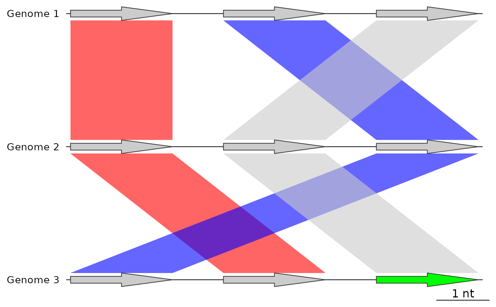
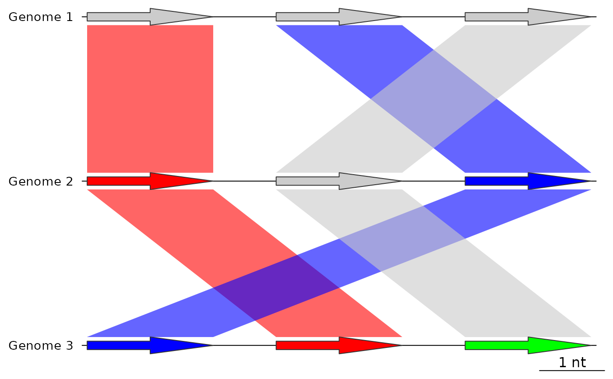

Update dna_segs using comparisons
update_dna_segs.RdA dna_seg or list of dna_segs is updated using a matching list of
comparisons. This can be used to update the region_plot or color attributes
of dna_seg features, by linking them with comparisons.
Usage
update_dna_segs(
dna_seg_input,
comparison_input,
seg_id = "locus_id",
comparison_id = "auto",
update_region_plot = TRUE,
color_var = NULL,
default_color = "grey80",
update_from_top = TRUE
)Arguments
- dna_seg_input
Either a single
dna_segor a list ofdna_segobjects.- comparison_input
Either a single
comparisonor a list ofcomparisonobjects.- seg_id
The name of a
dna_segcolumn, whose values will be used to make the links to the comparisons.- comparison_id
The shared name of the
comparisoncolumns, whose values will be used to make the links to thedna_segs. See details.- update_region_plot
Logical. If
TRUE, updates theregion_plotattribute ofdna_segs, which determines whether the neighborhood of these features is plotted in a regional plot.- color_var
The color column to update in the
dna_segs. Must be eithercol,fill, or left as the defaultNULL, which will result in no color column being updated.- default_color
A character string providing the default color of the comparisons, must be either
NULLor a valid color. The color given by this argument will be ignored when updating, never overwriting any color in thedna_segs.- update_from_top
Logical. If
TRUE, updates thedna_segswith the comparisons above them in the plotting order. Setting this toFALSEwill make it update thedna_segsusing the comparisons below them in the plotting order, but this also means that thedna_segsandcomparisonsneed to be provided in reverse plotting order. Therefore, this is recommended to be used only when providing a singledna_segandcomparison.
Value
Either a single dna_seg object or a list of dna_seg objects,
matching the input given using dna_seg_input.
Details
If dna_seg_input is a single dna_seg, it will be updated using the first
(or only) comparison from comparison_input.
When updating colors, the colors will be taken from the col column from
the comparison objects, regardless of whether the col or fill
column is updated in the dna_segs, because the fill column is absent
in comparison objects.
The objects are linked together through shared
values. The columns for these shared values are determined by the seg_id
and comparison_id arguments, for the dna_segs and comparisons,
respectively. comparison_id refers to 2 columns, and defaults to "auto",
which will attempt to determine which columns to use automatically.
If for example, comparison_id is set as "name", it will look for the
"name1" and "name2" columns to match to the seg_id in the dna_segs
above, and under it, respectively.
When update_from_top is TRUE, it assumes the list of dna_segs and
comparisons are in plotting order. The first dna_seg will not be updated
as there is no comparison above it to update it with. If instead
update_from_top is FALSE, the dna_segs and comparisons would have to
be supplied in reverse plot order, which is why this is not recommended.
In this case the last dna_seg in plot order will not be updated, as there
was no comparison below it to update it with.
Examples
## Prepare dna_seg
names1 <- c("1A", "1B", "1C")
names2 <- c("2A", "2C", "2B")
names3 <- c("3B", "3A", "3C")
## Make dna_segs
dna_seg1 <- dna_seg(data.frame(name = names1,
start = (1:3) * 3,
end = (1:3) * 3 + 2,
strand = rep(1, 3)))
dna_seg2 <- dna_seg(data.frame(name = names2,
start = (1:3) * 3,
end = (1:3) * 3 + 2,
strand = rep(1, 3)))
dna_seg3 <- dna_seg(data.frame(name = names3,
start = (1:3) * 3,
end = (1:3) * 3 + 2,
strand = rep(1, 3),
fill = c("grey80", "grey80", "green")))
dna_segs <- list("Genome 1" = dna_seg1,
"Genome 2" = dna_seg2,
"Genome 3" = dna_seg3)
## Make comparisons
comp1 <- comparison(data.frame(start1 = c(3, 6, 9), end1 = c(5, 8, 11),
start2 = c(3, 9, 6), end2 = c(5, 11, 8),
name1 = c("1A", "1B", "1C"),
name2 = c("2A", "2B", "2C"),
col = c("red", "blue", "grey80"),
direction = c(1, 1, 1)))
comp2 <- comparison(data.frame(start1 = c(3, 9, 6), end1 = c(5, 11, 8),
start2 = c(6, 3, 9), end2 = c(8, 5, 11),
name1 = c("2A", "2B", "2C"),
name2 = c("3A", "3B", "3C"),
col = c("red", "blue", "grey80"),
direction = c(1, 1, 1)))
## Before using update_dna_segs
plot_gene_map(dna_segs = dna_segs,
comparisons = list(comp1, comp2),
alpha_comparisons = 0.6)

## Apply update_dna_segs to update the colors
dna_segs <- update_dna_segs(dna_seg_input = dna_segs,
comparison_input = list(comp1, comp2),
seg_id = "name",
update_region_plot = FALSE,
color_var = "fill",
default_color = "grey80")
## After using update_dna_segs
## Because default_color was "grey80", that color will not overwrite dna_segs
plot_gene_map(dna_segs = dna_segs,
comparisons = list(comp1, comp2),
alpha_comparisons = 0.6)
